Galaxy Engine 5.1 · 20 kolejnych seedów
Podglądy kompozycji wygenerowane offline. To nie są zrzuty WebGL ani testy GPU.
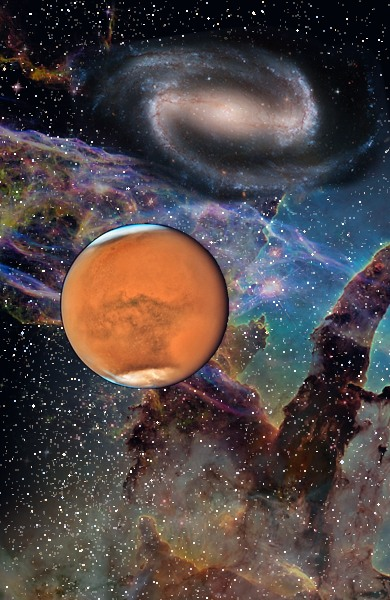
Seed 0 · 89.5/100planetary-vista
NASA, ESA, Hubble Heritage Team; NASA , ESA/Hubble and the Hubble Heritage Team; NASA , ESA , N. Smith (University of California, Berkeley), and The Hubble Heritage Team (STScI/AURA); NASA , ESA , and The Hubble Heritage Team ( STScI / AURA ); NASA, ESA, and STScI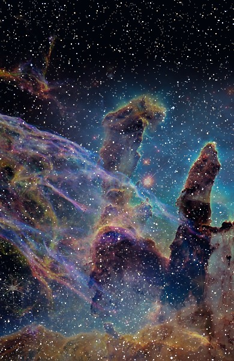
Seed 1 · 89.4/100nebula-landscape
NASA, ESA, Hubble Heritage Team; NASA , ESA/Hubble and the Hubble Heritage Team; NASA, ESA, CSA, and STScI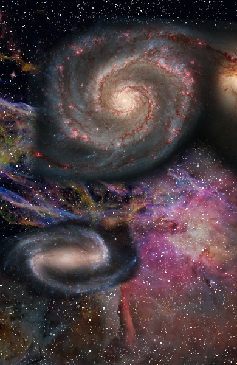
Seed 2 · 90.4/100galaxy-showcase
NASA, ESA, Hubble Heritage Team; NASA , ESA , M. Robberto ( Space Telescope Science Institute / ESA ) and the Hubble Space Telescope Orion Treasury Project Team; NASA , ESA , N. Smith (University of California, Berkeley), and The Hubble Heritage Team (STScI/AURA); NASA , ESA , S. Beckwith ( STScI ), and The Hubble Heritage Team ( STScI / AURA ); NASA , ESA , and The Hubble Heritage Team ( STScI / AURA )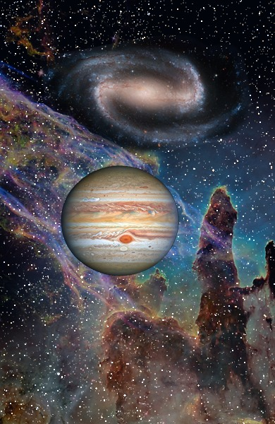
Seed 3 · 89.8/100planetary-vista
NASA, ESA, Hubble Heritage Team; NASA , ESA/Hubble and the Hubble Heritage Team; NASA , ESA , N. Smith (University of California, Berkeley), and The Hubble Heritage Team (STScI/AURA); NASA , ESA , and The Hubble Heritage Team ( STScI / AURA ); NASA, ESA, A. Simon (Goddard Space Flight Center), and M. H. Wong (University of California, Berkeley) and the OPAL team.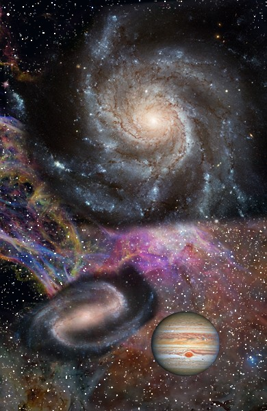
Seed 4 · 88.7/100galaxy-planet
NASA, ESA, Hubble Heritage Team; NASA , ESA , M. Robberto ( Space Telescope Science Institute / ESA ) and the Hubble Space Telescope Orion Treasury Project Team; NASA , ESA , N. Smith (University of California, Berkeley), and The Hubble Heritage Team (STScI/AURA); Image: European Space Agency & NASA Acknowledgements: Project Investigators for the original Hubble data: K.D. Kuntz (GSFC), F. Bresolin (University of Hawaii), J. Trauger (JPL), J. Mould (NOAO), and Y.-H. Chu (University of Illinois, Urbana) Image processing: Davide De Martin ( ESA / Hubble ) CFHT image: Canada-France-Hawaii Telescope/J.-C. Cuillandre/Coelum NOAO image: George Jacoby, Bruce Bohannan, Mark Hanna/NOAO/AURA/NSF; NASA , ESA , and The Hubble Heritage Team ( STScI / AURA ); NASA, ESA, A. Simon (Goddard Space Flight Center), and M. H. Wong (University of California, Berkeley) and the OPAL team.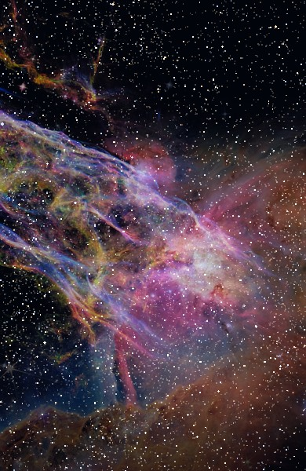
Seed 5 · 90.3/100nebula-landscape
NASA, ESA, Hubble Heritage Team; NASA , ESA , M. Robberto ( Space Telescope Science Institute / ESA ) and the Hubble Space Telescope Orion Treasury Project Team; NASA, ESA, CSA, and STScI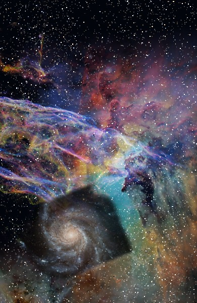
Seed 6 · 89.2/100nebula-landscape
NASA, ESA, Hubble Heritage Team; NASA, ESA, STScI; NASA , ESA , N. Smith (University of California, Berkeley), and The Hubble Heritage Team (STScI/AURA); Image: European Space Agency & NASA Acknowledgements: Project Investigators for the original Hubble data: K.D. Kuntz (GSFC), F. Bresolin (University of Hawaii), J. Trauger (JPL), J. Mould (NOAO), and Y.-H. Chu (University of Illinois, Urbana) Image processing: Davide De Martin ( ESA / Hubble ) CFHT image: Canada-France-Hawaii Telescope/J.-C. Cuillandre/Coelum NOAO image: George Jacoby, Bruce Bohannan, Mark Hanna/NOAO/AURA/NSF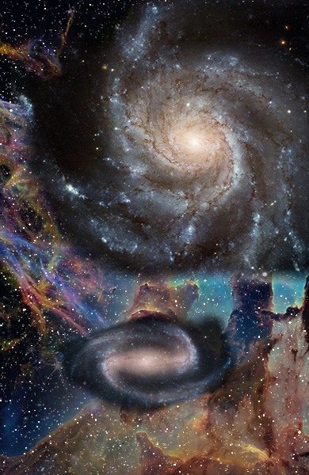
Seed 7 · 90.3/100deep-space
NASA, ESA, Hubble Heritage Team; NASA , ESA/Hubble and the Hubble Heritage Team; NASA, ESA, CSA, and STScI; Image: European Space Agency & NASA Acknowledgements: Project Investigators for the original Hubble data: K.D. Kuntz (GSFC), F. Bresolin (University of Hawaii), J. Trauger (JPL), J. Mould (NOAO), and Y.-H. Chu (University of Illinois, Urbana) Image processing: Davide De Martin ( ESA / Hubble ) CFHT image: Canada-France-Hawaii Telescope/J.-C. Cuillandre/Coelum NOAO image: George Jacoby, Bruce Bohannan, Mark Hanna/NOAO/AURA/NSF; NASA , ESA , and The Hubble Heritage Team ( STScI / AURA )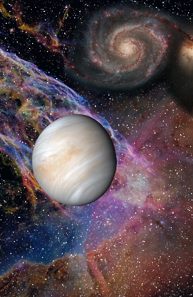
Seed 8 · 89.7/100planetary-vista
NASA, ESA, Hubble Heritage Team; NASA , ESA , M. Robberto ( Space Telescope Science Institute / ESA ) and the Hubble Space Telescope Orion Treasury Project Team; NASA, ESA, CSA, and STScI; NASA , ESA , S. Beckwith ( STScI ), and The Hubble Heritage Team ( STScI / AURA ); NASA/JPL-Caltech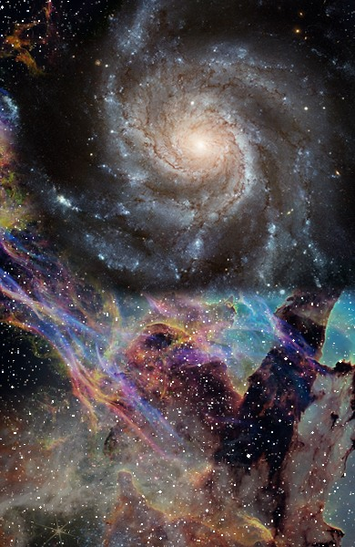
Seed 9 · 88.6/100deep-space
NASA, ESA, Hubble Heritage Team; NASA , ESA/Hubble and the Hubble Heritage Team; NASA, ESA, CSA, and STScI; Image: European Space Agency & NASA Acknowledgements: Project Investigators for the original Hubble data: K.D. Kuntz (GSFC), F. Bresolin (University of Hawaii), J. Trauger (JPL), J. Mould (NOAO), and Y.-H. Chu (University of Illinois, Urbana) Image processing: Davide De Martin ( ESA / Hubble ) CFHT image: Canada-France-Hawaii Telescope/J.-C. Cuillandre/Coelum NOAO image: George Jacoby, Bruce Bohannan, Mark Hanna/NOAO/AURA/NSF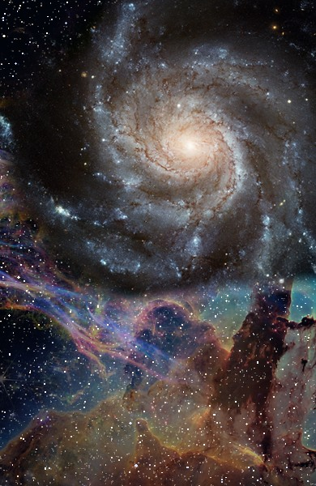
Seed 10 · 88.8/100galaxy-showcase
NASA, ESA, Hubble Heritage Team; NASA , ESA/Hubble and the Hubble Heritage Team; NASA, ESA, CSA, and STScI; Image: European Space Agency & NASA Acknowledgements: Project Investigators for the original Hubble data: K.D. Kuntz (GSFC), F. Bresolin (University of Hawaii), J. Trauger (JPL), J. Mould (NOAO), and Y.-H. Chu (University of Illinois, Urbana) Image processing: Davide De Martin ( ESA / Hubble ) CFHT image: Canada-France-Hawaii Telescope/J.-C. Cuillandre/Coelum NOAO image: George Jacoby, Bruce Bohannan, Mark Hanna/NOAO/AURA/NSF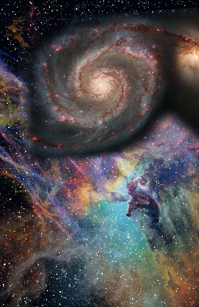
Seed 11 · 90.4/100galaxy-showcase
NASA, ESA, Hubble Heritage Team; NASA, ESA, STScI; NASA, ESA, CSA, and STScI; NASA , ESA , S. Beckwith ( STScI ), and The Hubble Heritage Team ( STScI / AURA )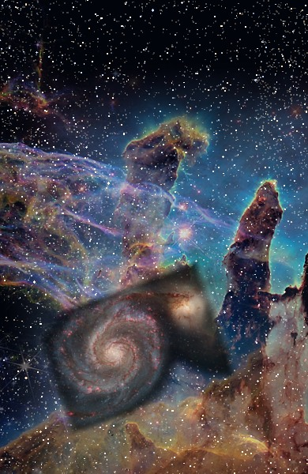
Seed 12 · 89.7/100nebula-landscape
NASA, ESA, Hubble Heritage Team; NASA , ESA/Hubble and the Hubble Heritage Team; NASA, ESA, CSA, and STScI; NASA , ESA , S. Beckwith ( STScI ), and The Hubble Heritage Team ( STScI / AURA )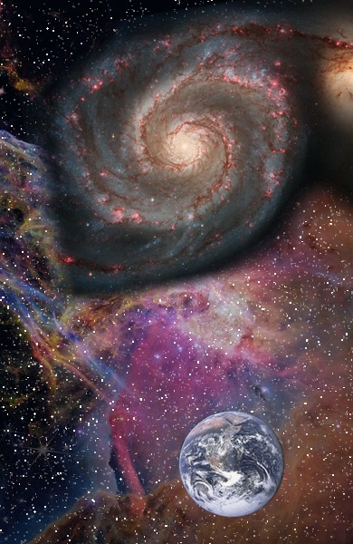
Seed 13 · 88.9/100galaxy-planet
NASA, ESA, Hubble Heritage Team; NASA , ESA , M. Robberto ( Space Telescope Science Institute / ESA ) and the Hubble Space Telescope Orion Treasury Project Team; NASA, ESA, CSA, and STScI; NASA , ESA , S. Beckwith ( STScI ), and The Hubble Heritage Team ( STScI / AURA ); NASA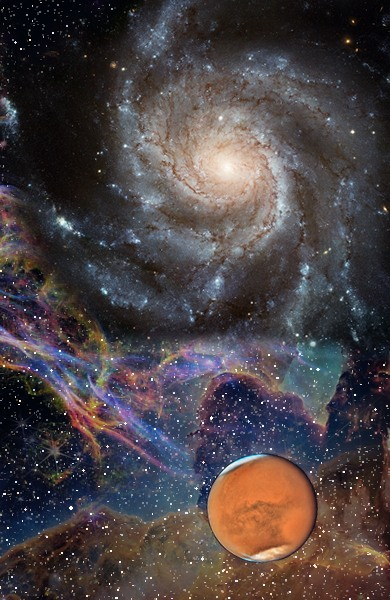
Seed 14 · 88.8/100galaxy-planet
NASA, ESA, Hubble Heritage Team; NASA , ESA/Hubble and the Hubble Heritage Team; NASA, ESA, CSA, and STScI; Image: European Space Agency & NASA Acknowledgements: Project Investigators for the original Hubble data: K.D. Kuntz (GSFC), F. Bresolin (University of Hawaii), J. Trauger (JPL), J. Mould (NOAO), and Y.-H. Chu (University of Illinois, Urbana) Image processing: Davide De Martin ( ESA / Hubble ) CFHT image: Canada-France-Hawaii Telescope/J.-C. Cuillandre/Coelum NOAO image: George Jacoby, Bruce Bohannan, Mark Hanna/NOAO/AURA/NSF; NASA, ESA, and STScI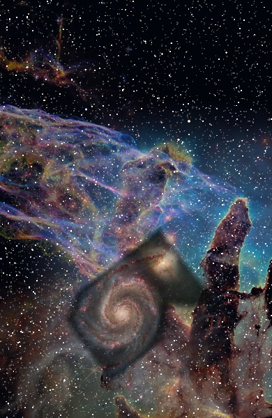
Seed 15 · 89.9/100nebula-landscape
NASA, ESA, Hubble Heritage Team; NASA , ESA/Hubble and the Hubble Heritage Team; NASA, ESA, CSA, and STScI; NASA , ESA , S. Beckwith ( STScI ), and The Hubble Heritage Team ( STScI / AURA )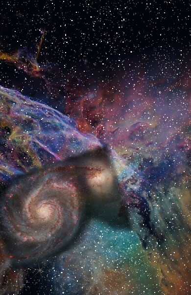
Seed 16 · 88.9/100nebula-landscape
NASA, ESA, Hubble Heritage Team; NASA, ESA, STScI; NASA, ESA, CSA, and STScI; NASA , ESA , S. Beckwith ( STScI ), and The Hubble Heritage Team ( STScI / AURA )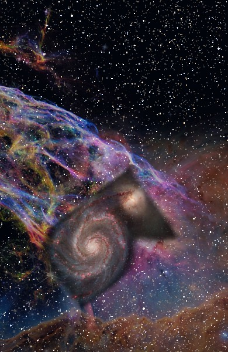
Seed 17 · 90.7/100nebula-landscape
NASA, ESA, Hubble Heritage Team; NASA , ESA , M. Robberto ( Space Telescope Science Institute / ESA ) and the Hubble Space Telescope Orion Treasury Project Team; NASA, ESA, CSA, and STScI; NASA , ESA , S. Beckwith ( STScI ), and The Hubble Heritage Team ( STScI / AURA )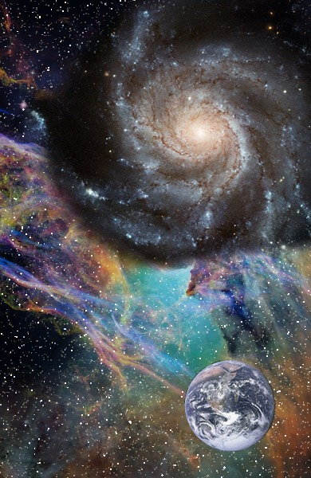
Seed 18 · 88.8/100galaxy-planet
NASA, ESA, Hubble Heritage Team; NASA, ESA, STScI; NASA , ESA , N. Smith (University of California, Berkeley), and The Hubble Heritage Team (STScI/AURA); Image: European Space Agency & NASA Acknowledgements: Project Investigators for the original Hubble data: K.D. Kuntz (GSFC), F. Bresolin (University of Hawaii), J. Trauger (JPL), J. Mould (NOAO), and Y.-H. Chu (University of Illinois, Urbana) Image processing: Davide De Martin ( ESA / Hubble ) CFHT image: Canada-France-Hawaii Telescope/J.-C. Cuillandre/Coelum NOAO image: George Jacoby, Bruce Bohannan, Mark Hanna/NOAO/AURA/NSF; NASA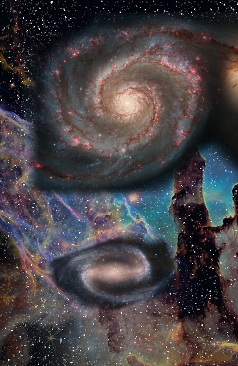
Seed 19 · 90.8/100galaxy-showcase
NASA, ESA, Hubble Heritage Team; NASA , ESA/Hubble and the Hubble Heritage Team; NASA, ESA, CSA, and STScI; NASA , ESA , S. Beckwith ( STScI ), and The Hubble Heritage Team ( STScI / AURA ); NASA , ESA , and The Hubble Heritage Team ( STScI / AURA )